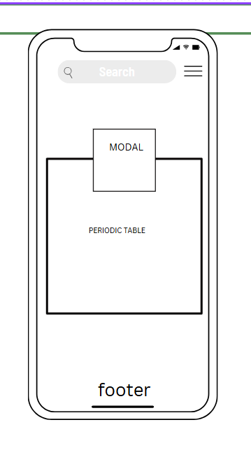

Site Name
Name: Interactive Periodic Table
Reason: This name was chosen because it clearly conveys the primary feature of the website, which is an engaging, interactive periodic table aimed at enhancing learning for chemistry students.
Site Purpose
The purpose of this site is to provide an educational tool for students to explore the periodic table in an interactive manner. It aims to make learning about chemical elements engaging and visually appealing while offering detailed information about each element.
Scenarios
- What characteristics do particular elements, such carbon or oxygen have?
- How can I visually comprehend how the components are grouped and exhibit periodic trends?
Color Schema
- Primary Color: #4caf50 (used for buttons, highlights, and interactive elements)
- Secondary Color: #282c34 (used for the header background and modal borders)
Typography
- Font: Roboto, sans-serif (used for all headings and body text)
Wireframe
Mobile View:
Desktop View: